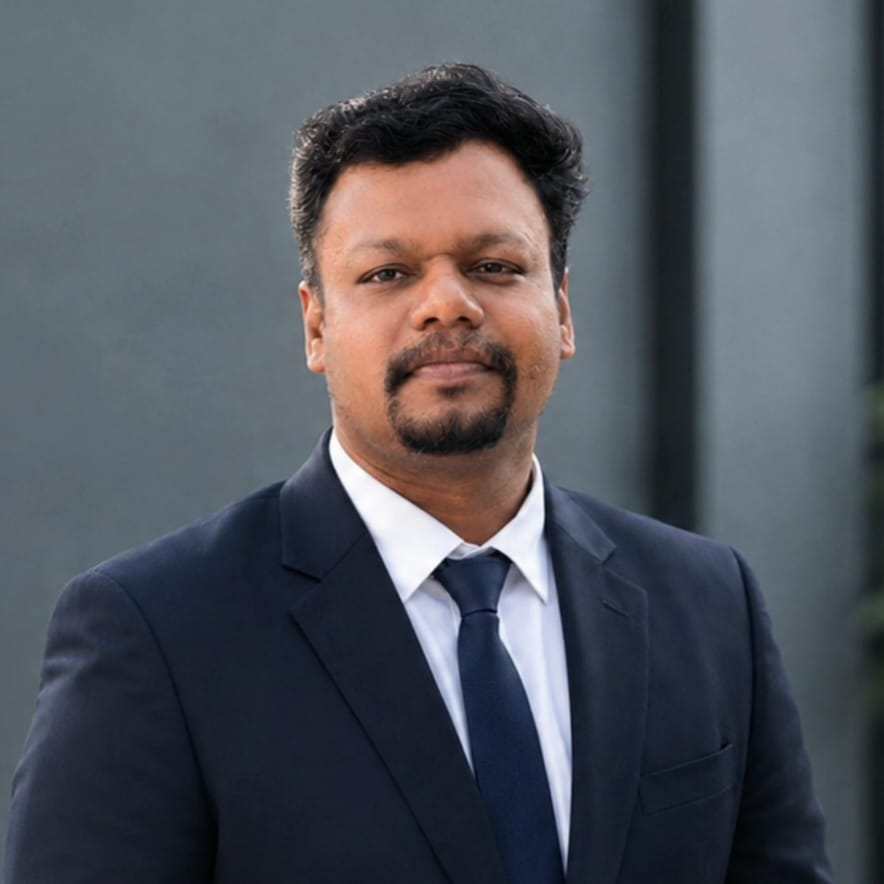

Turning coherent light into measurement.
Fourteen years designing interferometers, light-sheet microscopes, Raman platforms, and OCT systems — from physical modelling through fabrication, validation, and publication. Currently building biomedical optics and OCT research at ERBA Global Institute of Medical Technology (EGIMT).

ERBA Global Institute of Medical Technology (EGIMT)
An instrument-builder's approach to optics
Ramachandran works across atomic, molecular, and optical physics to design and build imaging, sensing, and spectroscopy platforms — with a core strength in fiber-optic interferometry, Raman and fluorescence spectroscopy, and photon-efficient detection for low-light, photon-limited measurement.
His work runs end to end: physical modelling and optical design, through experimental implementation, validation, and data analysis. That range has carried him through federally and internationally funded programs across three countries, with a consistent record of peer-reviewed publication and patented technology.
"Advancing optical and photonic technologies for biomedical imaging, precision sensing, and real-world applications through interdisciplinary, experiment-driven research and innovation. ."
Six threads, one optical bench
Each area below has produced working hardware, not just simulation — instruments built, calibrated, and run in the lab.
Biomedical Optics & OCT
Optical coherence tomography concepts, proof-of-concept systems, and IP development for real-time biomedical imaging.
Light-Sheet & Raman Imaging
Single-objective Airy light-sheet systems, video-rate Raman metabolic imaging, and photon-sparse fluorescence detection.
Fiber-Optic Interferometry
Concatenated Mach-Zehnder and Sagnac loop systems for EDFA gain flattening, current sensing, and spectral tailoring.
Acousto-Optic & Vibration Sensing
Multi-beam heterodyne laser Doppler vibrometry and line-scan CMOS interferometry for defense-grade measurement.
Terahertz & Spectroscopic Imaging
Off-axis THz digital holography and Raman/photoacoustic spectroscopy for materials and explosives characterization.
Photonics Simulation & AI
Ansys Lumerical, Tidy3D, and Luceda IPKISS modelling paired with machine learning for biomedical image analysis.
Five countries, one continuous line of instrumentation
Developing OCT-based concepts and IP, teaching and mentoring in medical technology, and supervising student projects in machine learning, biomedical image analysis, and optical instrumentation.
ERBA Global Institute of Medical Technology (EGIMT)Built Raman/fluorescence and Airy light-sheet imaging setups; explored non-diffracting beams for ultrafast light-sheet microscopy. Published in PNAS and ACS Photonics; filed one US patent.
Idaho, USADeveloped a heterodyne interferometer and line-scan CMOS multibeam setup for membrane vibration measurement. Published in Applied Optics and Optics Letters.
Mississippi, USAStudied charge transfer via Raman and pulsed photoacoustic spectroscopy; constructed an off-axis THz digital holography system for explosives characterization.
Hyderabad, IndiaTaught Engineering Physics (PH100) to undergraduates; led student cultural and technical fest coordination. Included a nine-month research leave.
Kerala, IndiaBuilt a polarization-based Michelson interferometer and digital holography system; developed MATLAB phase-extraction code using 2D FFT for dynamic spectro-ellipsometry.
South KoreaDissertation: "Spectral Tailoring through Concatenated All-Fibre Interferometers for Communication and Sensing Applications." Designed a concatenated Mach-Zehnder / fiber loop mirror system for EDFA gain flattening.
Chennai, India$700,000+ across five agencies
1 patent · 12 peer-reviewed articles · 12 conference papers
ORCID: 0000-0002-6774-5184
Awards, memberships & editorial service
Awards & Honors
- 2025Early Career Physicist — Institute of Physics, UK
- 2022Outstanding Reviewer Award — Institute of Physics, UK
- —Trusted Reviewer Status — Institute of Physics, UK
- —Ph.D. Fellowship (HTRA Scheme) — Government of India
Memberships & Development
- Responsible Conduct of Research — CITI Program
- Peer Review Excellence Training — Institute of Physics
- Faculty Development Program — ACUE
- Quantum Optics Certification — École Polytechnique
Classroom to research bench
Teaching
Engineering Physics (PH100) to 250+ undergraduates across disciplines, plus guest electromagnetism lectures to a 100-level class of 80 students. Consistently rated 95% satisfaction in student evaluations, with a focus on connecting theory to engineering practice.
Mentoring
- Mentored US high school students for the Junior Science and Humanities Symposium, 2022–2025.
- "Pathonix" (ovarian cancer detection) — 1st place, NABT Professional Development Conference, 2024.
- "3D Bioprinting for Cartilage Repair" student — admitted to Stanford Clinical Science Program, 2025.
- Panel member, "Postdoc experiences and guidance for graduate students," University of Mississippi.